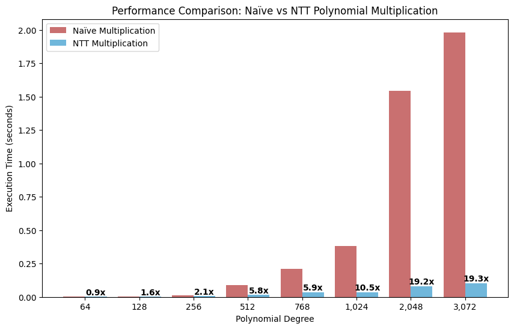
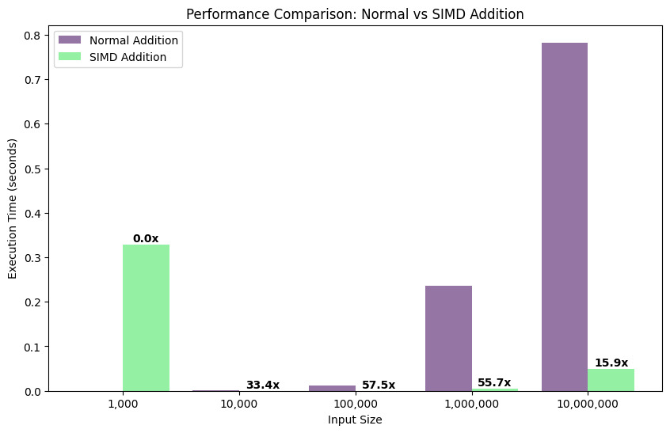
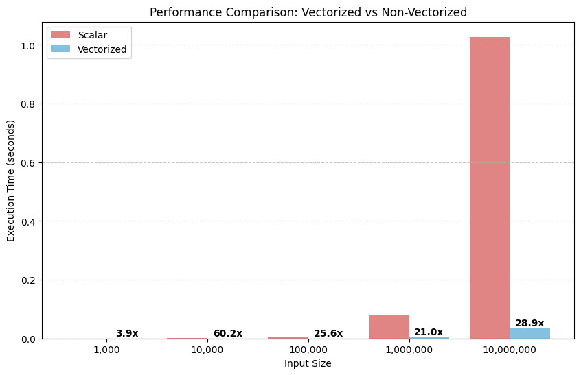

Mathematical Foundations of goKyber
goKyber is built upon the foundations of post-quantum cryptography, specifically leveraging lattice-based cryptography. This document delves into the mathematical concepts that underpin goKyber, providing a detailed explanation suitable for those with a mathematical background. We will explore lattices, polynomials, the Learning with Errors (LWE) problem, related hard problems, and the algorithmic optimizations that make goKyber efficient.
Lattices
In mathematics, a lattice is a regular array of points in n-dimensional Euclidean space. Formally, a lattice $L$ in $\mathbb{R}^n$ is a discrete additive subgroup of $\mathbb{R}^n$. More concretely, for some basis vectors $\mathbf{b}_1, \mathbf{b}_2, ..., \mathbf{b}_m \in \mathbb{R}^n$ (where $m \leq n$), the lattice generated by these basis vectors is the set of all integer linear combinations:
$L = \{ \sum_{i=1}^{m} x_i \mathbf{b}_i \mid x_i \in \mathbb{Z} \}$
When $m = n$, the lattice is called a full-rank lattice. In cryptography, we often work with full-rank lattices in integer vector spaces. Lattices are fundamental because certain computational problems on lattices are believed to be computationally hard, even for quantum computers. This hardness forms the basis for post-quantum cryptography.

Example of a 2D Lattice
Consider two basis vectors in $\mathbb{R}^2$: $\mathbf{b}_1 = (2, 0)$ and $\mathbf{b}_2 = (1, 2)$. The lattice $L$ generated by these vectors consists of all points of the form $x_1\mathbf{b}_1 + x_2\mathbf{b}_2$ where $x_1, x_2$ are integers. This means points like $0\mathbf{b}_1 + 0\mathbf{b}_2 = (0, 0)$, $1\mathbf{b}_1 + 0\mathbf{b}_2 = (2, 0)$, $0\mathbf{b}_1 + 1\mathbf{b}_2 = (1, 2)$, $1\mathbf{b}_1 + 1\mathbf{b}_2 = (3, 2)$, $-1\mathbf{b}_1 + 1\mathbf{b}_2 = (-1, 2)$, and so on. Imagine an infinite grid of points formed by these combinations.
Lattice Basis Reduction
A lattice can be described by multiple bases. Some bases are "good" – meaning they consist of short, nearly orthogonal vectors, while others are "bad" – containing long and non-orthogonal vectors. Given a "bad" basis, finding a "good" basis is known as the Lattice Basis Reduction problem. Algorithms like LLL (Lenstra-Lenstra-Lovász) and BKZ (Block Korkine-Zolotarev) attempt to find reduced bases. However, in high dimensions, these algorithms become computationally expensive, often exhibiting exponential time complexity. The difficulty of finding a significantly reduced basis in high-dimensional lattices contributes to the hardness of lattice problems.

Ideal Lattices and Module Lattices
For efficiency and practicality in cryptography, we often use structured lattices. Two important types are ideal lattices and module lattices. Ideal lattices are related to ideals in rings of integers, and module lattices are generalizations of ideal lattices to modules over rings. CRYSTALS-Kyber, and therefore goKyber, utilizes module lattices. These structured lattices offer computational advantages and can lead to smaller key sizes compared to general lattices, while still maintaining the presumed hardness of underlying lattice problems like LWE and SVP. The added structure doesn't seem to weaken the hardness significantly in practice, but greatly improves efficiency.
Polynomials and Polynomial Rings
Polynomials play a crucial role in lattice-based cryptography, particularly in schemes like Kyber. We typically work with polynomials in a ring, such as the ring of polynomials with integer coefficients modulo some integer $q$, denoted as $\mathbb{Z}_q[x]$. In Kyber, we specifically use polynomial rings of the form $R_q = \mathbb{Z}_q[x] / (x^n + 1)$, where $n$ is a power of 2 and $(x^n + 1)$ is the ideal generated by $x^n + 1$. This means we are considering polynomials modulo $q$ and also modulo $(x^n + 1)$. Mathematically, $R_q$ is a quotient ring.
The choice of the polynomial $x^n + 1$ (where $n$ is a power of 2) is not arbitrary. Polynomials of the form $x^n + 1$ are examples of cyclotomic polynomials. These polynomials are chosen because in the ring $R_q = \mathbb{Z}_q[x] / (x^n + 1)$, we can find principal $2n$-th roots of unity when $q \equiv 1 \pmod{2n}$ or if we choose $q$ carefully. The existence of these roots of unity is crucial for efficiently implementing the Number Theoretic Transform (NTT), which we will discuss later, and which greatly speeds up polynomial multiplication.
The operation modulo $(x^n + 1)$ is polynomial reduction. When we perform multiplication in $R_q$, after multiplying two polynomials, we reduce the result modulo $q$ for coefficients and modulo $(x^n + 1)$ for the polynomial degree. Reduction modulo $(x^n + 1)$ can be efficiently implemented by replacing $x^n$ with $-1$, $x^{n+1}$ with $-x$, and so on.
Example of Polynomial Reduction
Let's work in $R_q = \mathbb{Z}_q[x] / (x^4 + 1)$. Suppose we have a polynomial $p(x) = x^5 + 2x^4 - 3x^3 + x^2 + 4x - 5$. To reduce $p(x)$ modulo $(x^4 + 1)$, we replace $x^4$ with $-1$. $x^5 = x^4 \cdot x \equiv -1 \cdot x = -x \pmod{x^4 + 1}$. $2x^4 \equiv 2(-1) = -2 \pmod{x^4 + 1}$. So, $p(x) \equiv -x - 2 - 3x^3 + x^2 + 4x - 5 = -3x^3 + x^2 + 3x - 7 \pmod{x^4 + 1}$. The reduced polynomial is $-3x^3 + x^2 + 3x - 7$, which has a degree less than 4.
Polynomial Representation
In computer implementations, polynomials are often represented in coefficient form, where we store a list (or array) of the coefficients. For example, a polynomial $f(x) = a_0 + a_1x + a_2x^2 + ... + a_{n-1}x^{n-1}$ is represented by the coefficient vector $(a_0, a_1, a_2, ..., a_{n-1})$. However, for efficient polynomial multiplication using NTT, we transform this coefficient representation into the NTT domain (also sometimes called the frequency domain or transform domain). In the NTT domain, polynomial multiplication becomes a simple point-wise multiplication of the transformed coefficients. After pointwise multiplication, we perform an inverse NTT to convert the result back to the coefficient representation. This transform-multiply-inverse transform approach is a key optimization in goKyber and lattice-based cryptography.
Learning With Errors (LWE) Problem
The Learning with Errors (LWE) problem is a central problem in lattice-based cryptography. It is conjectured to be computationally hard to solve, even with quantum computers. The LWE problem comes in two main forms: search LWE and decision LWE. In cryptography, the decision LWE problem is often more relevant.
Decision LWE Problem
Given a matrix $\mathbf{A} \in \mathbb{Z}_q^{m \times n}$ and a vector $\mathbf{s} \in \mathbb{Z}_q^{n}$ chosen uniformly at random. Let $\mathbf{e} \in \mathbb{Z}_q^{m}$ be a "small" error vector, typically with entries chosen from a discrete Gaussian distribution. We are given samples of the form $(\mathbf{a}_i, b_i)$, where $\mathbf{a}_i$ is the $i$-th row of $\mathbf{A}$ and
$b_i = \langle \mathbf{a}_i, \mathbf{s} \rangle + e_i \pmod{q}$
The decision LWE problem asks to distinguish between samples generated as described (from the LWE distribution) and samples where $b_i$ are chosen uniformly at random from $\mathbb{Z}_q$. In other words, distinguish between $(\mathbf{A}, \mathbf{A}\mathbf{s} + \mathbf{e})$ and $(\mathbf{A}, \mathbf{u})$, where $\mathbf{u}$ is uniformly random in $\mathbb{Z}_q^m$.
More formally, let's define two distributions. Let $D_{\mathbf{s}, \mathbf{A}}$ be the distribution obtained by sampling $\mathbf{e} \leftarrow \mathcal{D}_{\sigma}^m$ (a discrete Gaussian distribution with parameter $\sigma$) and outputting $(\mathbf{A}, \mathbf{b} = \mathbf{A}\mathbf{s} + \mathbf{e} \pmod{q})$. Let $U$ be the uniform distribution over $\mathbb{Z}_q^{m \times n} \times \mathbb{Z}_q^m$. The Decision LWE (DLWE) problem is to distinguish between samples drawn from $D_{\mathbf{s}, \mathbf{A}}$ and samples drawn from $U$.
Example of Decision LWE Intuition
Imagine you are given pairs $(\mathbf{a}_i, b_i)$. In one case, $b_i$ is calculated as $\langle \mathbf{a}_i, \mathbf{s} \rangle + e_i \pmod{q}$ with a small error $e_i$. In the other case, $b_i$ is just a random number in $\mathbb{Z}_q$, unrelated to $\mathbf{a}_i$. If the error $e_i$ is small enough, the pairs $(\mathbf{a}_i, b_i)$ from the LWE distribution will exhibit a subtle linear structure (due to the $\langle \mathbf{a}_i, \mathbf{s} \rangle$ term), while the uniformly random pairs will have no such structure. The challenge of Decision LWE is to detect this subtle difference.
Search LWE Problem
The Search LWE (SLWE) problem is, given a matrix $\mathbf{A} \in \mathbb{Z}_q^{m \times n}$ and a vector $\mathbf{b} = \mathbf{A}\mathbf{s} + \mathbf{e} \pmod{q}$, where $\mathbf{s}$ and $\mathbf{e}$ are chosen as in the Decision LWE problem, to recover the secret vector $\mathbf{s}$. Solving Search LWE would directly allow an attacker to break cryptographic schemes based on LWE. Decision LWE is generally considered to be no harder than Search LWE; if you can solve Search LWE, you can certainly distinguish between the LWE distribution and a uniform distribution.
The Role of the Error and Discrete Gaussian Distribution
The "error" vector $\mathbf{e}$ is essential to the hardness of the LWE problem. If there were no error (i.e., $\mathbf{e} = \mathbf{0}$), then we would have a system of linear equations $\mathbf{b} = \mathbf{A}\mathbf{s} \pmod{q}$. This system could be easily solved using Gaussian elimination (or similar linear algebra techniques) to recover $\mathbf{s}$. The error term makes the system noisy and obscures the linear relationship, making it computationally hard to solve. The error vector $\mathbf{e}$ is typically chosen from a discrete Gaussian distribution. A discrete Gaussian distribution $\mathcal{D}_{\sigma}$ (with parameter $\sigma$, related to the standard deviation) over the integers tends to produce small integer values with higher probability and larger values with exponentially decreasing probability, resembling a continuous Gaussian distribution but defined on integers. Choosing errors from such a distribution ensures that the errors are "small" but also have enough randomness to provide security.
Module LWE (MLWE)
CRYSTALS-Kyber, which goKyber implements, is based on a variant of LWE called Module LWE (MLWE). MLWE operates directly with polynomials in the polynomial ring $R_q = \mathbb{Z}_q[x] / (x^n + 1)$. Instead of matrices and vectors of integers, MLWE deals with matrices and vectors of polynomials. In MLWE, we consider matrices $\mathbf{A}$ with entries in $R_q$ and vectors $\mathbf{s}, \mathbf{e}$ also with entries in $R_q$. The MLWE problem is analogous to LWE, but performed in the polynomial ring. For example, the Decision MLWE problem asks to distinguish between $(\mathbf{A}, \mathbf{A}\mathbf{s} + \mathbf{e})$ and $(\mathbf{A}, \mathbf{u})$, where $\mathbf{A}$ and $\mathbf{s}$ are chosen appropriately from $R_q$ and $\mathbf{e}$ is a "small" error polynomial vector, and $\mathbf{u}$ is chosen uniformly at random from $R_q$. The operations are performed in the ring $R_q$, meaning polynomial multiplication and addition modulo $q$ and modulo $(x^n + 1)$. Using MLWE offers several advantages:
- Efficiency: MLWE can be more efficient than standard LWE, especially when combined with NTT for polynomial multiplication. Working with polynomials allows for compact representations and faster operations.
- Smaller Keys: MLWE-based schemes can often achieve comparable security levels with smaller key sizes compared to LWE schemes over integer lattices.
- Structured Hardness: While MLWE has more structure than standard LWE, it is still believed to be computationally hard, and its hardness is also related to the hardness of lattice problems, specifically problems on module lattices.
Hardness of LWE
The hardness of LWE is based on the presumed difficulty of solving certain lattice problems in their worst-case scenario, such as the Shortest Vector Problem (SVP) and the Gap Closest Vector Problem (GapCVP). Specifically, it has been shown that solving LWE is as hard as worst-case instances of GapCVP and SVP on general lattices under quantum and classical reductions.
Shortest Vector Problem (SVP) and Closest Vector Problem (CVP)
Shortest Vector Problem (SVP)
Given a lattice $L$, the Shortest Vector Problem (SVP) is to find a shortest non-zero vector in the lattice. More formally, find a vector $\mathbf{v} \in L \setminus \{\mathbf{0}\}$ such that for all $\mathbf{u} \in L \setminus \{\mathbf{0}\}$, we have $||\mathbf{v}|| \leq ||\mathbf{u}||$, where $||\cdot||$ denotes the Euclidean norm.
In cryptography, we are often concerned with the $\gamma$-approximate SVP ($\text{SVP}_\gamma$). Instead of finding the *absolute* shortest vector, $\text{SVP}_\gamma$ asks to find a non-zero lattice vector $\mathbf{v}$ whose length $||\mathbf{v}||$ is at most $\gamma$ times the length of the shortest non-zero lattice vector. Even for relatively large approximation factors $\gamma$, $\text{SVP}_\gamma$ is believed to be hard in high dimensions.
Closest Vector Problem (CVP)
Given a lattice $L$ and a target vector $\mathbf{t} \notin L$, the Closest Vector Problem (CVP) is to find a lattice vector $\mathbf{v} \in L$ that is closest to $\mathbf{t}$. More formally, find $\mathbf{v} \in L$ such that for all $\mathbf{u} \in L$, we have $||\mathbf{t} - \mathbf{v}|| \leq ||\mathbf{t} - \mathbf{u}||$.
Similarly to SVP, we also consider the $\gamma$-approximate CVP ($\text{CVP}_\gamma$), where we need to find a lattice vector $\mathbf{v}$ such that the distance $||\mathbf{t} - \mathbf{v}||$ is at most $\gamma$ times the distance to the true closest lattice vector. A related problem is the Gap Closest Vector Problem (GapCVP). GapCVP, given a lattice $L$, a target vector $\mathbf{t}$, and a distance $d$, asks to decide whether the closest lattice vector to $\mathbf{t}$ is at a distance at most $d$ or at a distance greater than $\gamma \cdot d$ (for some gap factor $\gamma > 1$). GapCVP is a decision problem, while CVP is a search problem.
Relevance to LWE and Cryptography
The presumed hardness of SVP and CVP, especially in high dimensions and even in their approximate forms, is what underpins the security of LWE-based cryptography. If an adversary could efficiently solve SVP or CVP in general lattices, they could potentially break LWE-based cryptosystems. Crucially, there are hardness reductions that show that solving LWE is at least as hard as solving worst-case instances of GapCVP and $\text{SVP}_\gamma$ (for certain approximation factors $\gamma$) on general lattices, under both classical and quantum reductions. This means that if LWE is broken, then it implies that these long-standing hard lattice problems can also be solved efficiently, which is considered highly unlikely by the cryptographic community. The CRYSTALS-Kyber key-encapsulation mechanism, which goKyber implements, relies on the hardness of Module-LWE (MLWE), a variant of LWE that benefits from structured lattices, yet remains computationally hard.

Shor's Algorithm and Post-Quantum Cryptography
Shor's algorithm, developed by Peter Shor in 1994, is a quantum algorithm that can efficiently factor large integers and compute discrete logarithms in polynomial time on a quantum computer. These problems are the foundation of widely used public-key cryptosystems like RSA and Elliptic Curve Cryptography (ECC). The existence of Shor's algorithm poses a significant threat to the security of these cryptosystems once quantum computers become sufficiently powerful.

Post-quantum cryptography (PQC) is the field dedicated to developing cryptographic systems that are secure against both classical and quantum computers. Lattice-based cryptography, including schemes like Kyber based on LWE/MLWE, is a leading candidate for post-quantum cryptography because there is no known quantum algorithm that can efficiently break these systems. goKyber focuses on implementing CRYSTALS-Kyber to provide a practical and efficient post-quantum encryption framework.
Number Theoretic Transform (NTT)
The Number Theoretic Transform (NTT) is an algorithm analogous to the Fast Fourier Transform (FFT) but operates in finite fields (specifically, rings of integers modulo a prime number) rather than complex numbers. In the context of lattice-based cryptography, NTT is crucial for performing fast polynomial multiplication in rings like $R_q = \mathbb{Z}_q[x] / (x^n + 1)$.

Polynomial multiplication is a fundamental operation in schemes like Kyber. Direct polynomial multiplication has a quadratic time complexity, specifically $O(n^2)$ for polynomials of degree up to $n-1$. However, using NTT, we can reduce the complexity to quasi-linear, specifically $O(n \log n)$, where $n$ is the degree of the polynomials. This speedup is essential for making lattice-based cryptography practical.
The NTT, like the FFT, achieves this speedup through a divide and conquer approach. It breaks down the polynomial multiplication problem into smaller subproblems, solves them recursively, and then combines the results efficiently. This recursive structure is what leads to the logarithmic factor in the $O(n \log n)$ complexity. A fundamental building block of the NTT algorithm is the butterfly operation. A butterfly operation combines the results of two smaller DFTs (or NTTs in our case) into a larger one. In its simplest form, a butterfly operation looks like this: Given two values $X$ and $Y$, and a root of unity $\omega$, the butterfly operation computes:
$X' = X + \omega \cdot Y$
$Y' = X - \omega \cdot Y$
In Kyber, NTT is used to efficiently perform polynomial multiplication in the ring $R_q$. The process generally involves:
- NTT Transformation: Transform the polynomials from coefficient representation into the NTT domain.
- Pointwise Multiplication: Perform pointwise multiplication of the transformed polynomials in the NTT domain. This is simply multiplying corresponding coefficients together, which takes $O(n)$ time.
- Inverse NTT Transformation: Transform the result back from the NTT domain to the polynomial coefficient domain using the inverse NTT algorithm.

Example of NTT Butterfly Operation
Let's consider a simplified NTT example with modulus $q=17$ and a 4th root of unity $\omega = 4$ (since $4^4 = 256 \equiv 1 \pmod{17}$). Suppose we have values $X = 5$ and $Y = 2$. A butterfly operation with $\omega = 4$ would compute: $X' = X + \omega \cdot Y = 5 + 4 \cdot 2 = 13$. $Y' = X - \omega \cdot Y = 5 - 4 \cdot 2 = -3 \equiv 14 \pmod{17}$. So, the butterfly operation transforms $(5, 2)$ into $(13, 14)$. In the full NTT algorithm, many such butterfly operations are combined in a structured pattern.
Roots of Unity in NTT
The NTT relies on the existence of principal $2n$-th roots of unity in the ring $R_q$. A $2n$-th root of unity $\omega$ is an element such that $\omega^{2n} = 1$ and $\omega^k \neq 1$ for $1 \leq k < 2n$. The NTT algorithm cleverly uses these roots of unity to perform the transform and inverse transform. The specific choice of the polynomial ring $R_q=\mathbb{Z}_q[x] / (x^n + 1)$ and the modulus $q$ are often selected to ensure that suitable roots of unity exist, making NTT possible and efficient. For example, in $\mathbb{Z}_q$ where $q=3329$ and $n=256$, a primitive $512$-th root of unity exists.
Montgomery Multiplication
Montgomery multiplication is an efficient algorithm for performing modular multiplication, especially useful in scenarios where modular reductions need to be performed frequently, like in NTT and other cryptographic operations. Standard modular multiplication involves a division operation to reduce the product modulo $q$, which can be computationally expensive. Montgomery multiplication avoids explicit division.
The core idea of Montgomery multiplication is to work with numbers in the "Montgomery domain". For a modulus $q$ and a chosen radix $R$ (usually a power of 2 such that $\gcd(q, R) = 1$ and $R > q$), the Montgomery product of two integers $a$ and $b$ (in Montgomery form) effectively computes $a \cdot b \cdot R^{-1} \pmod{q}$ without performing explicit divisions in each step. It relies on additions, subtractions, and multiplications, making it highly efficient in hardware and software implementations.
Montgomery Domain and Efficiency
In goKyber and similar implementations, Montgomery multiplication is used to optimize the modular arithmetic operations within the NTT and other parts of the algorithm, contributing to the overall computational efficiency. For algorithms that perform many modular multiplications in sequence (like NTT-based polynomial multiplication), it is efficient to convert all numbers into the Montgomery domain at the beginning, perform all intermediate calculations using Montgomery multiplication, and then convert the final result back out of the Montgomery domain at the end. This avoids costly divisions in each modular multiplication step.
Vectorization and SIMD in Detail
Vectorization and SIMD (Single Instruction, Multiple Data) are powerful techniques used to enhance computational performance, especially in cryptographic implementations like goKyber. Modern CPUs offer SIMD instructions that allow a single instruction to perform the same operation on multiple data elements simultaneously. This is in contrast to scalar operations, where each instruction operates on a single data element. By utilizing SIMD, we can process data in parallel, leading to significant speed improvements, particularly for data-parallel tasks common in lattice-based cryptography, such as polynomial arithmetic.
Scalar (Non-Vectorized) Polynomial Addition
Consider adding two polynomials, $f(x)$ and $g(x)$, represented by their coefficient arrays
f_coeffs and g_coeffs. In a scalar implementation, the addition would typically be
performed element by element in a loop:
function scalar_poly_add(f_coeffs, g_coeffs, n):
result_coeffs = array of size n
for i from 0 to n-1:
result_coeffs[i] = f_coeffs[i] + g_coeffs[i]
return result_coeffs
Vectorized (SIMD) Polynomial Addition
With SIMD, we can process multiple coefficients in parallel. Assuming we have SIMD registers that can hold 4 elements at once (e.g., 128-bit registers and 32-bit coefficients), we can perform the addition in chunks of 4 coefficients:
function vectorized_poly_add(f_coeffs, g_coeffs, n):
result_coeffs = array of size n
num_vectors = n / 4 // Assuming n is a multiple of 4 for simplicity
for i from 0 to num_vectors - 1:
// Load 4 coefficients from f_coeffs and g_coeffs into SIMD registers
vector_f = load_simd_vector(f_coeffs, i * 4) // Loads f_coeffs[4*i], f_coeffs[4*i+1]...
vector_g = load_simd_vector(g_coeffs, i * 4) // Loads g_coeffs[4*i], g_coeffs[4*i+1]...
// Perform SIMD addition: adds corresponding elements in parallel
vector_result = simd_add(vector_f, vector_g)
// Store the 4 results back to result_coeffs
store_simd_vector(result_coeffs, i * 4, vector_result) // Stores vector_result to result_coeffs[4*i], result_coeffs[4*i+1]...
// Handle any remaining coefficients if n is not a multiple of 4 (scalar addition)
for i from (num_vectors * 4) to n - 1: // Scalar loop for remainder
result_coeffs[i] = f_coeffs[i] + g_coeffs[i]
return result_coeffs
In the vectorized example, the load_simd_vector, simd_add, and
store_simd_vector functions represent SIMD operations. The key is that simd_add
performs four additions simultaneously in a single instruction cycle, drastically reducing the loop iterations
and execution time for large polynomials. Real-world implementations often use intrinsics (compiler-specific
functions that map to SIMD instructions) or assembly language for fine-grained control over SIMD operations.
This principle of parallel processing through SIMD is applied to various operations in goKyber, including NTT,
polynomial multiplication, and other arithmetic operations, to achieve high performance.
Computational Efficiency in goKyber
goKyber is designed to be a high-performance and practical post-quantum encryption framework. Computational efficiency is a key consideration. Several techniques contribute to this efficiency:
- NTT for Polynomial Multiplication: As discussed, NTT dramatically speeds up polynomial multiplication, a core operation in Kyber.
- Optimized Sampling: Efficient algorithms are used for sampling error vectors from discrete Gaussian distributions, which is necessary for LWE-based schemes. Techniques like Knuth-Yao sampling or inversion sampling are often employed.
- Montgomery Arithmetic: Montgomery multiplication and related techniques are employed to optimize modular arithmetic.
- Vectorization and Parallelism (SIMD): Implementations are heavily optimized using vectorization through SIMD (Single Instruction, Multiple Data) instructions available in modern processors. SIMD allows performing the same operation on multiple data elements simultaneously. For example, when performing NTT or polynomial operations, we can pack multiple polynomial coefficients into vector registers and process them in parallel with a single instruction. Instruction sets like AVX2 and AVX-512 provide wide registers (256-bit, 512-bit respectively) enabling significant speedups. This is particularly effective for operations like polynomial addition, subtraction, and pointwise multiplication in the NTT domain.
- Memory Access Patterns and Cache Optimization: Efficient implementations pay close attention to memory access patterns. NTT algorithms, if not carefully implemented, can lead to non-contiguous memory accesses, which can cause cache misses and slow down performance. Techniques like in-place NTT algorithms and data layout optimizations are used to improve data locality and minimize cache misses, maximizing the utilization of the CPU cache.
- Parameter Selection: Kyber parameters are carefully chosen to balance security and performance. The use of structured lattices (module lattices) in MLWE also contributes to efficiency. Kyber comes with different parameter sets (e.g., Kyber512, Kyber768, Kyber1024), offering different levels of security and performance trade-offs. Higher security levels typically involve larger parameters (like the polynomial degree $n$ and modulus $q$), which increases computational cost but provides stronger security. These parameter sets are designed to meet specific security targets defined by standards like NIST's post-quantum cryptography standardization process.
Optimization Results
  References
- D. J. Bernstein, J. Buchmann, and E. Dahmen. "Post-quantum cryptography" . Springer, 2009.
- V. Lyubashevsky, P. Kirchner, and T. Pöppelmann. "CRYSTALS - Kyber: A CCA-Secure Module-Lattice-Based KEM" . Public Draft, 2019.
- O. Regev. "On lattices, learning with errors, random linear codes, and cryptography" . Journal of the ACM (JACM), 56(6), 2009.
- P. W. Shor. "Algorithms for quantum computation: discrete logarithms and factoring" . In Proceedings of the 35th annual symposium on foundations of computer science, pp. 124-134. IEEE, 1994.
- J. P. Guajardo, S. S. Kumar, G. Paar, and J. Pelzl. "Efficient Implementation of NTT-Based Multiplication for Polynomials over Ring Zq" . In Cryptographic Hardware and Embedded Systems - CHES 2007, pp. 283-295. Springer, 2007.
- T. Cormen, C. Leiserson, R. Rivest, and C. Stein. "Introduction to Algorithms" (Chapter 30: Polynomials and the FFT). MIT Press, 2009. (Although this is about FFT, the principles are similar to NTT and chapter explains polynomial multiplication and transform based methods)
- P. L. Montgomery. "Modular Multiplication without Trial Division" . Mathematics of Computation, 44(170), 519-521, 1985. (Original paper on Montgomery Multiplication)
- A. Bosselaers, R. Govaerts, and J. Vandewalle. "Comparison of three modular reduction functions" . In Advances in Cryptology—CRYPTO '93, pp. 175-186. Springer, 1994. (Discusses different modular reduction techniques including Montgomery reduction.)
- Daniel Loebenberger, Peter Schwabe, Simon Oderich, and Johannes Güneysu. "High-Performance NTT-based Polynomial Multiplication for Module-LWE Lattice-Based Cryptography" . IACR eprint, 2017. (Specifically focuses on NTT for MLWE which is very relevant to Kyber)